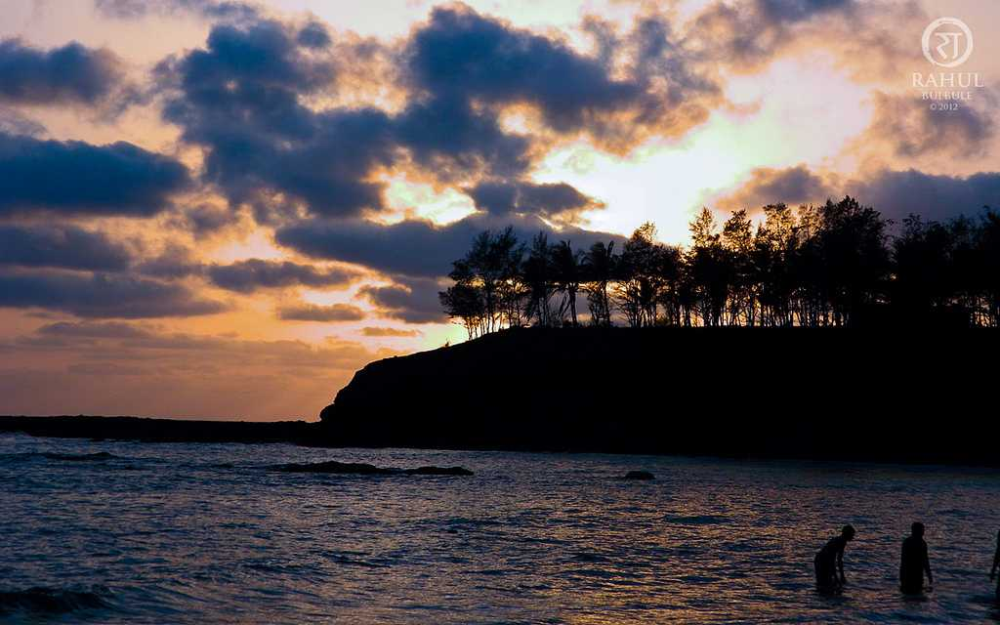

You can find me where the sand meets the water
Alibaug Trip
Alibaug (also spelled as Alibag) is a small coastal town in the Konkan region of Maharashtra, known for its beaches, villas, and beautiful scenery. Alibag is very popular as a weekend getaway from the cities of Mumbai and Pune.
Water sports in Alibaug like parasailing, banana boat and jet ski and speed boating are quite popular during the dry season. Most tourist families spend at least one night in Alibag with extending to multiple nights.
Alibaug has earned itself the name of 'mini-Goa', owing to the high tourist footfall all year round. Steeped in colonial history, Alibaug is a quaint little town located about 96 km from Mumbai and 150 km from Pune, and is replete with sandy beaches, clean unpolluted air, and plenty of forts and temples, ensuring that despite being a small town, you never run out of activities to do.
Alibaug is famous for its numerous beaches, which are only a few minutes’ drive away from each other, so you won’t have to worry about which beach to visit and which one to leave out. The most visited beach in Alibaug is, of course, Alibaug Beach, which offers a spectacular of view of not only the sunrise and sunset but of the Kolaba Fort as well, which you can take a short boat ride to. The Colaba fort was once the cornerstone of the Maratha Empire, and most of the edifice is still in good shape. Other popular beaches in the area include Kihim Beach, and Nagaon Beach, with Kihim beach being a photographer’s paradise.
Alibaug is also home to Mandwa Beach, a beach famously known for the innumerable number of movie shootings that take place here. The beach offers a stunning view of the Gateway of India from its bay, and you can sit and sip on a cool drink on the sand under the orchard of coconut trees lining the beach.
Leave a comment